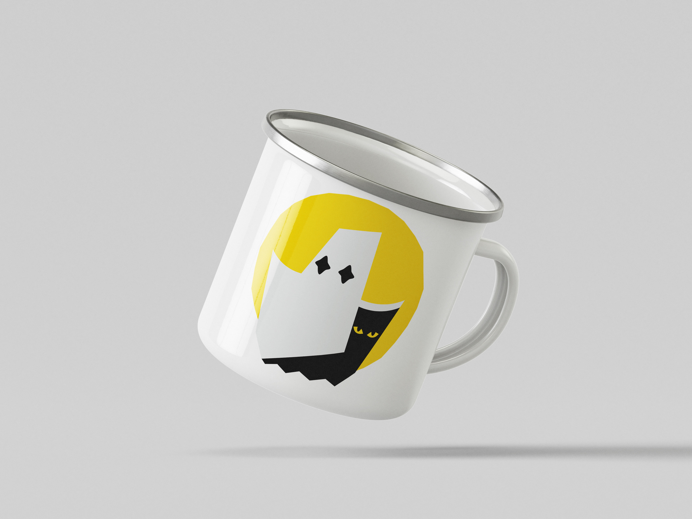
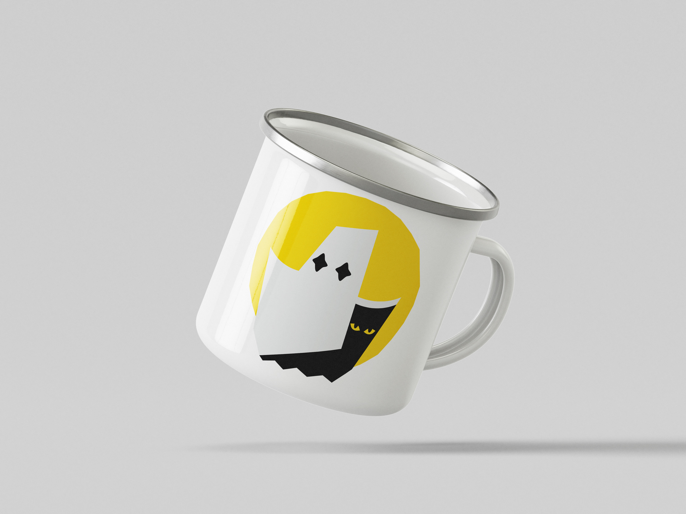
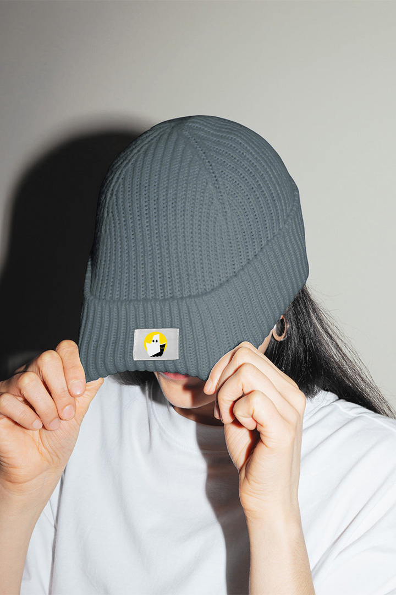
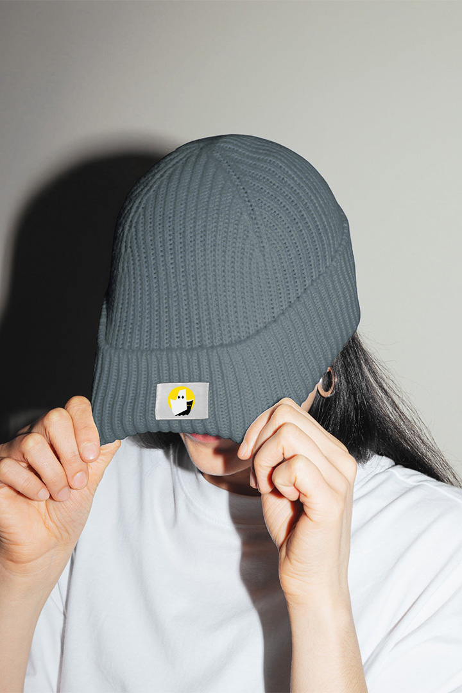
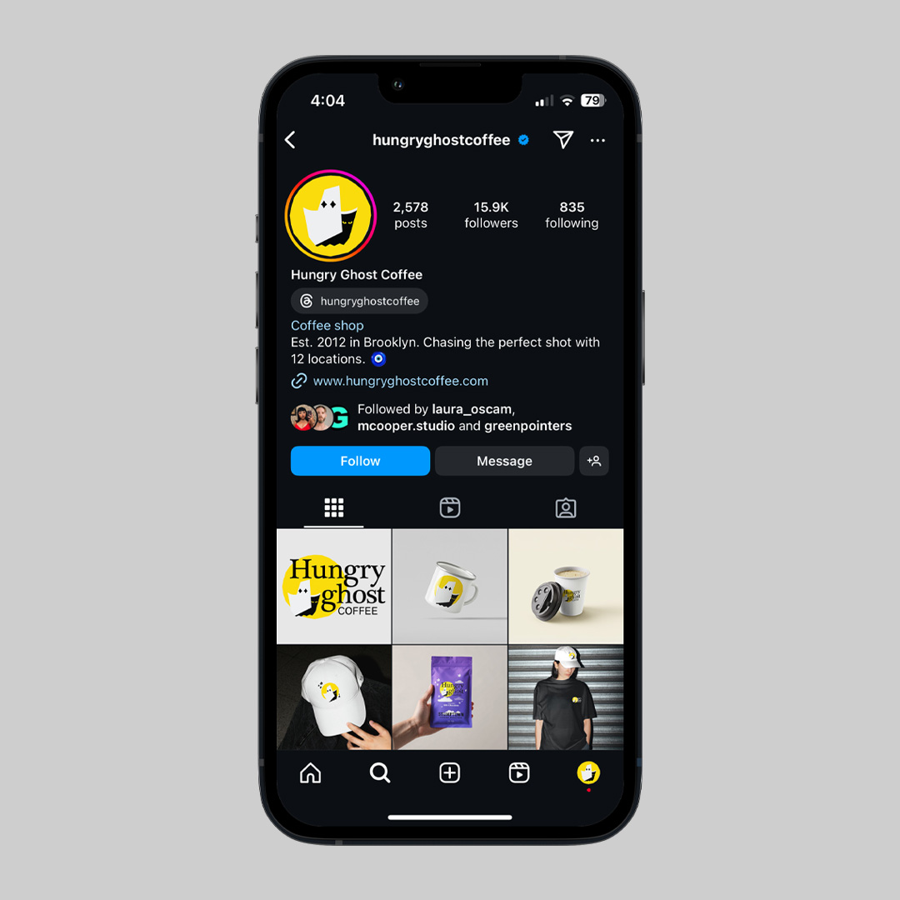
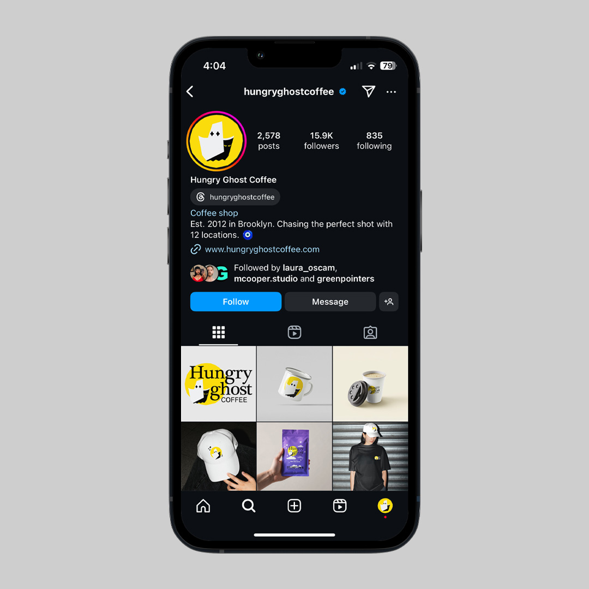

[About]
The Hungry Ghost rebrand captures a sense of subtle playfulness. The logo features clean,
modern visuals that strengthen its connection to the brand’s identity. Minor typographic
adjustments were made as the logo was refined, all while staying true to the essence of the original brand.

 

 

 
